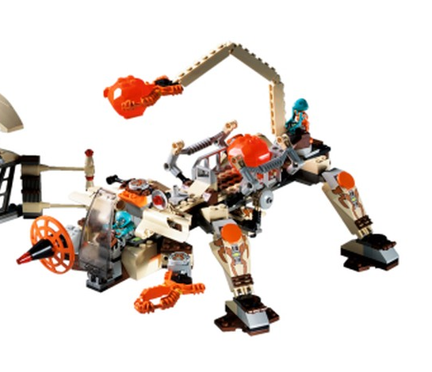

Production Design Target
LEGO 7316 · стандартна зібрана машина

Завершений LEGO 7316 — головна машина; окрема док-станція й фігурки не входять до таргета.

Уточнення до старого опису T082: зображення показують клешню та окремий дисковий інструмент, центральний відсік і малий апарат під ним — не пару передніх клешень, бур і нижні санчата.
unit.martians.excavation_searcher../tools/verify.sh --targeted design-package та локальна перевірка хешів, посилань, ідентичності й стану рішення.codex/m85-t083; наявні не пов’язані зміни робочого дерева збережені.